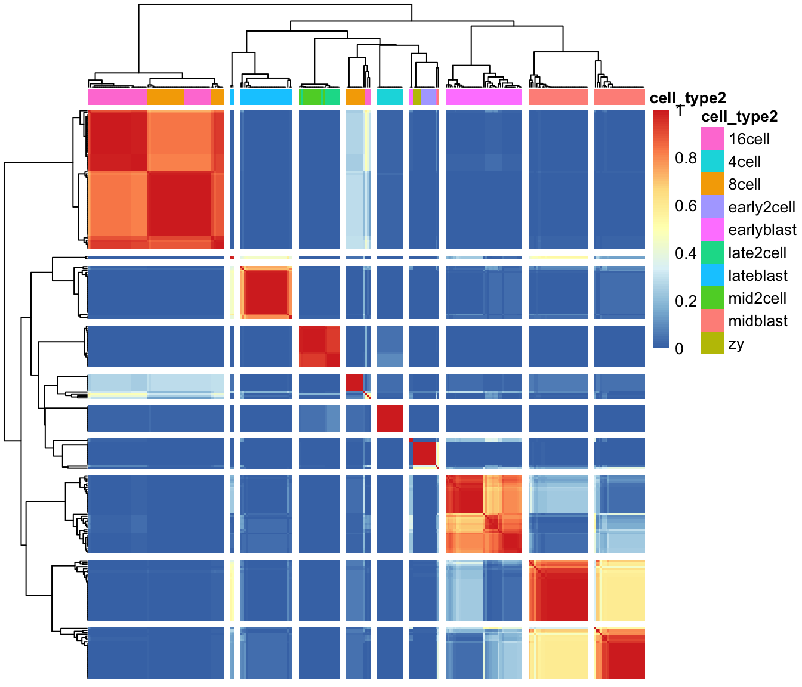
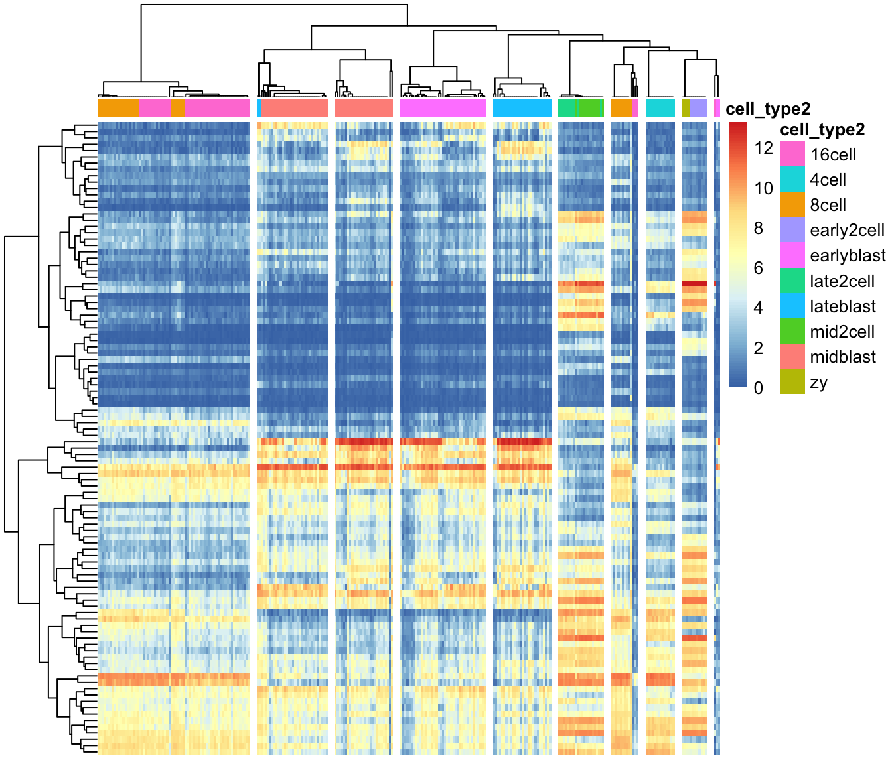
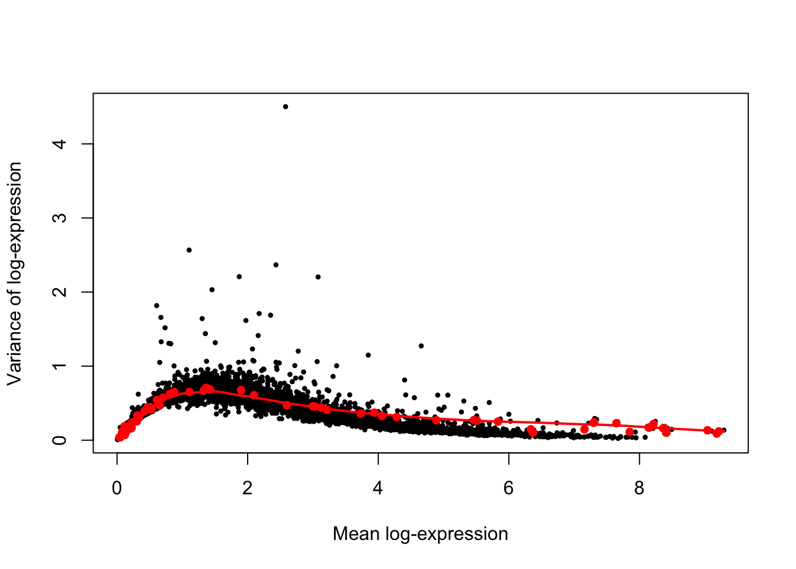
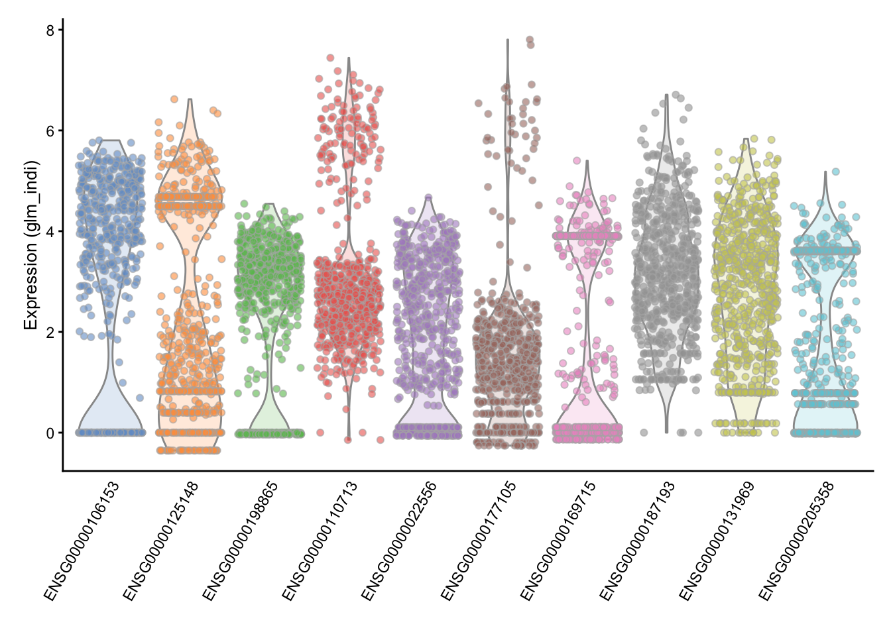

6 Biological Analysis
6.1 Clustering
Once we have normalized the data and removed confounders we can carry out analyses that are relevant to the biological questions at hand. The exact nature of the analysis depends on the dataset. Nevertheless, there are a few aspects that are useful in a wide range of contexts and we will be discussing some of them in the next few chapters. We will start with the clustering of scRNA-seq data.
6.1.1 Introduction
One of the most promising applications of scRNA-seq is de novo discovery and annotation of cell-types based on transcription profiles. Computationally, this is a hard problem as it amounts to unsupervised clustering. That is, we need to identify groups of cells based on the similarities of the transcriptomes without any prior knowledge of the labels. Moreover, in most situations we do not even know the number of clusters a priori. The problem is made even more challenging due to the high level of noise (both technical and biological) and the large number of dimensions (i.e. genes).
6.1.2 Dimensionality reduction
When working with large datasets, it can often be beneficial to apply some sort of dimensionality reduction method. By projecting the data onto a lower-dimensional sub-space, one is often able to significantly reduce the amount of noise. An additional benefit is that it is typically much easier to visualize the data in a 2 or 3-dimensional subspace. We have already discussed PCA and t-SNE.
6.1.3 Clustering methods
Unsupervised clustering is useful in many different applications and it has been widely studied in machine learning. Some of the most popular approaches are hierarchical clustering, k-means clustering and graph-based clustering.
6.1.3.1 Hierarchical clustering
In hierarchical clustering, one can use either a bottom-up or a top-down approach. In the former case, each cell is initially assigned to its own cluster and pairs of clusters are subsequently merged to create a hieararchy:

Figure 6.1: The hierarchical clustering dendrogram
With a top-down strategy, one instead starts with all observations in one cluster and then recursively split each cluster to form a hierarchy. One of the advantages of this strategy is that the method is deterministic.
6.1.3.2 k-means
In k-means clustering, the goal is to partition N cells into k different clusters. In an iterative manner, cluster centers are assigned and each cell is assigned to its nearest cluster:

Figure 6.2: Schematic representation of the k-means clustering
Most methods for scRNA-seq analysis includes a k-means step at some point.
6.1.3.3 Graph-based methods
Over the last two decades there has been a lot of interest in analyzing networks in various domains. One goal is to identify groups or modules of nodes in a network.

Figure 6.3: Schematic representation of the graph network
Some of these methods can be applied to scRNA-seq data by building a graph where each node represents a cell. Note that constructing the graph and assigning weights to the edges is not trivial. One advantage of graph-based methods is that some of them are very efficient and can be applied to networks containing millions of nodes.
6.1.4 Challenges in clustering
- What is the number of clusters k?
- What is a cell type?
- Scalability: in the last few years the number of cells in scRNA-seq experiments has grown by several orders of magnitude from ~\(10^2\) to ~\(10^6\)
- Tools are not user-friendly
6.1.5 Software packages for scRNA-seq data
6.1.5.1 clusterExperiment
- R/Bioconductor package uses
SingleCellExperimentobject - Functionality for running and comparing many different clusterings of single-cell sequencing data or other large mRNA expression data sets
- Based on the RSEC (Resampling-based Sequential Ensemble Clustering) algorithm for finding a single robust clustering based on the many clusterings that the user might create by perturbing various parameters of a clustering algorithm
6.1.5.2 SC3

Figure 6.4: SC3 pipeline
- R/Bioconductor package based on PCA and spectral dimensionality reductions (Kiselev et al. 2017)
- Utilises k-means
- Additionally performs the consensus clustering
6.1.5.3 tSNE + k-means
- Based on tSNE maps
- Utilises k-means
6.1.5.4 SINCERA
- SINCERA (Guo et al. 2015) is based on hierarchical clustering
- Data is converted to z-scores before clustering
- Identify k by finding the first singleton cluster in the hierarchy
6.1.5.5 pcaReduce
pcaReduce (žurauskienė and Yau 2016) combines PCA, k-means and “iterative” hierarchical clustering. Starting from a large number of clusters pcaReduce iteratively merges similar clusters; after each merging event it removes the principle component explaning the least variance in the data.
6.1.5.6 SNN-Cliq
SNN-Cliq (Xu and Su 2015) is a graph-based method. First the method identifies the k-nearest-neighbours of each cell according to the distance measure. This is used to calculate the number of Shared Nearest Neighbours (SNN) between each pair of cells. A graph is built by placing an edge between two cells If they have at least one SNN. Clusters are defined as groups of cells with many edges between them using a “clique” method. SNN-Cliq requires several parameters to be defined manually.
6.1.5.7 Seurat clustering
Seurat clustering is based on a community detection approach similar to SNN-Cliq and to one previously proposed for analyzing CyTOF data (Levine et al. 2015). Since Seurat has become more like an all-in-one tool for scRNA-seq data analysis we dedicate a separate chapter to discuss it in more details (chapter ??).
6.1.6 Comparing clustering
To compare two sets of clustering labels we can use adjusted Rand index. The index is a measure of the similarity between two data clusterings. Values of the adjusted Rand index lie in \([0;1]\) interval, where \(1\) means that two clusterings are identical and \(0\) means the level of similarity expected by chance.
6.2 Clustering example
To illustrate clustering of scRNA-seq data, we consider
the Deng dataset of cells from developing mouse embryo
(Deng et al. 2014). We have preprocessed the dataset and
created a SingleCellExperiment object in advance.
We have also annotated the cells with the cell types
identified in the original publication (it is the
cell_type2 column in the colData slot).
6.2.1 Deng dataset
Let’s load the data and look at it:
## class: SingleCellExperiment
## dim: 22431 268
## metadata(0):
## assays(2): counts logcounts
## rownames(22431): Hvcn1 Gbp7 ... Sox5 Alg11
## rowData names(10): feature_symbol is_feature_control ...
## total_counts log10_total_counts
## colnames(268): 16cell 16cell.1 ... zy.2 zy.3
## colData names(30): cell_type2 cell_type1 ... pct_counts_ERCC
## is_cell_control
## reducedDimNames(0):
## spikeNames(1): ERCCLet’s look at the cell type annotation:
##
## 16cell 4cell 8cell early2cell earlyblast late2cell
## 50 14 37 8 43 10
## lateblast mid2cell midblast zy
## 30 12 60 4A simple PCA analysis already separates some strong cell types and provides some insights in the data structure:

As you can see, the early cell types separate quite well, but the three blastocyst timepoints are more difficult to distinguish.
6.2.2 SC3
Let’s run SC3 clustering on the Deng data. The advantage
of the SC3 is that it can directly ingest a
SingleCellExperiment object.
Now let’s image we do not know the number of clusters k
(cell types). SC3 can estimate a number of clusters for you:
## Estimating k...## [1] 6Interestingly, the number of cell types predicted by SC3
is smaller than in the original data annotation. However,
early, mid and late stages of different cell types
together, we will have exactly 6 cell types. We store
the merged cell types in cell_type1 column of the
colData slot:

Now we are ready to run SC3 (we also ask it to calculate
biological properties of the clusters)
SC3 result consists of several different outputs
(please look in (Kiselev et al. 2017) and
SC3 vignette
for more details). Here we show some of them:
First up we plot a “consensus matrix”. The consensus matrix is a
NxN matrix, where N is the number of cells. It represents similarity
between the cells based on the averaging of clustering results from all
combinations of clustering parameters.
Similarity 0 (blue) means that the two cells are always assigned to different clusters. In contrast, similarity 1 (red) means that the two cells are always assigned to the same cluster. The consensus matrix is clustered by hierarchical clustering and has a diagonal-block structure. Intuitively, the perfect clustering is achieved when all diagonal blocks are completely red and all off-diagonal elements are completely blue.
We can plot the consensus matrix as a heatmap using the sc3_plot_consensus()
in the SC3 package.

Next, we can create a heatmap of the gene expression matrix using
the sc3_plot_expression() function in SC3.
The expression heatmap represents the original input expression matrix
(cells in columns and genes in rows) after applying a gene filter. Genes
are clustered by kmeans with k = 100 (dendrogram on the left) and the
heatmap represents the expression levels of the gene cluster centers
after log2-scaling. We also ask for k = 10 clusters of cells.

We can also create PCA plot with clusters identified from SC3:

We can compare the results of SC3 clustering with the
original publication cell type labels using the
Adjusted Rand Index.
The Rand index (named after William M. Rand) is a measure of the similarity between two data clusterings. The adjusted Rand index is the Rand index that is adjusted for the chance grouping of elements. Such a correction for chance establishes a baseline by using the expected similarity of all pair-wise comparisons between clusterings specified by a random model. The adjusted Rand index is thus ensured to have a value close to 0.0 for random labeling independently of the number of clusters and samples and exactly 1.0 when the clusterings are identical.
Here, we use the function adjustedRandIndex(), which is part of the mclust
package:
## [1] 0.6638246Note SC3 can also be run in an interactive Shiny
session:
This command will open SC3 in a web browser.
Before we leave this section, the package vignette points out that
because of direct calculations of distances, the SC3 functions will
become very slow when the number of cells is \(>5000\).
6.2.3 tSNE + kmeans
tSNE plots that we saw before when used the scater package are made by using the Rtsne and ggplot2 packages. Here we will do the same:
Figure 6.5: tSNE map of the patient data
Note that all points on the plot above are black. This is different from what we saw before, when the cells were coloured based on the annotation.
Here we do not have any annotation and all cells come from the same batch, therefore all dots are black.
Now we are going to apply k-means clustering algorithm to the cloud of points on the tSNE map. How many groups do you see in the cloud?
We will start with \(k=8\):
colData(deng)$tSNE_kmeans <- as.character(kmeans(reducedDim(deng, "TSNE"), centers = 8)$clust)
deng <- runTSNE(deng)
plotTSNE(deng, colour_by = "tSNE_kmeans")## Warning: 'add_ticks' is deprecated.
## Use '+ geom_rug(...)' instead.
Figure 6.6: tSNE map of the patient data with 8 colored clusters, identified by the k-means clustering algorithm
As you may have noticed, tSNE+kmeans is stochastic
and give different results every time it’s are run. To get a better
overview of the solutions, we need to run the methods multiple times.
SC3 is also stochastic, but thanks to the consensus step, it is
more robust and less likely to produce different outcomes.
6.3 Feature Selection
scRNA-seq is capable of measuring the expression of many thousands of genes in every cell. However, in most situations only a portion of those will show a response to the biological condition of interest, e.g. differences in cell-type, drivers of differentiation, respond to an environmental stimulus. Most genes detected in a scRNA-seq experiment will only be detected at different levels due to technical noise. One consequence of this is that technical noise and batch effects can obscure the biological signal of interest.
Thus, it is often advantageous to perform feature selection to remove those genes which only exhibit technical noise from downstream analysis. Not only does this generally increase the signal:noise ratio in the data; it also reduces the computational complexity of analyses, by reducing the total amount of data to be processed.
For scRNA-seq data, we typically focus on unsupervised methods of feature selection, which don’t require any a priori information, such as cell-type labels or biological group, since they are not available, or may be unreliable, for many experiments. In contrast, differential expression can be considered a form of supervised feature selection since it uses the known biological label of each sample to identify features (i.e. genes) which are expressed at different levels across groups.
In this section, we will briefly cover the concepts of feature selection, but due to a limit in time, I refer you to the main coures page for more details on feature selection:
http://hemberg-lab.github.io/scRNA.seq.course/biological-analysis.html#feature-selection
6.3.1 Identifying Genes vs a Null Model
There are two main approaches to unsupervised feature selection. The first is to identify genes which behave differently from a null model describing just the technical noise expected in the dataset.
If the dataset contains spike-in RNAs they can be used to directly model technical noise. However, measurements of spike-ins may not experience the same technical noise as endogenous transcripts (Svensson et al., 2017). In addition, scRNASeq experiments often contain only a small number of spike-ins which reduces our confidence in fitted model parameters.
6.3.1.1 Highly Variable Genes
The first method proposed to identify features in scRNASeq datasets was to identify highly variable genes (HVG). HVG assumes that if genes have large differences in expression across cells some of those differences are due to biological difference between the cells rather than technical noise. However, because of the nature of count data, there is a positive relationship between the mean expression of a gene and the variance in the read counts across cells. This relationship must be corrected for to properly identify HVGs.
For example, you can use the BiocGenerics::rowMeans() and MatrixStats::rowVars()
functions to plot the relationship between mean expression and variance
for all genes in this dataset. Also, you might try using log="xy" to plot
on a log-scale).
Alternatively, you can use the trendVar() and decomposeVar() functions
in the scran R/Bioconductor package to identify highly variable genes.
For this section, we go back to the tung (or umi.qc) data that
has been normalized and batch corrected. For purposes of the tutorial,
we will select the glm_indi normalized data.
umi.qc <- readRDS("data/tung/umi_qc.RDS")
var.fit <- trendVar(umi.qc, method = "loess", assay.type = "glm_indi")
var.out <- decomposeVar(umi.qc, var.fit)
head(var.out)## DataFrame with 6 rows and 6 columns
## mean total bio
## <numeric> <numeric> <numeric>
## ENSG00000237683 0.24662736578077 0.243858690202493 0.0356801534015803
## ENSG00000187634 0.0358302498678336 0.041042573799668 0.00447500876958429
## ENSG00000188976 1.71485831826354 0.745273783518252 0.114898539528563
## ENSG00000187961 0.218414586619208 0.203530230554452 0.0193960410083338
## ENSG00000187608 1.3692218193445 0.801170759584193 0.142065201109407
## ENSG00000188157 2.02030076886988 0.545656338513709 -0.0424745356608807
## tech p.value
## <numeric> <numeric>
## ENSG00000237683 0.208178536800913 0.00153459146498894
## ENSG00000187634 0.0365675650300837 0.0157736562230252
## ENSG00000188976 0.630375243989689 0.00085174073496591
## ENSG00000187961 0.184134189546118 0.0312433209044445
## ENSG00000187608 0.659105558474786 0.000120336074819414
## ENSG00000188157 0.588130874174589 0.906968345769253
## FDR
## <numeric>
## ENSG00000237683 0.0190971382309735
## ENSG00000187634 0.106015932367908
## ENSG00000188976 0.0124082937456012
## ENSG00000187961 0.167734905189692
## ENSG00000187608 0.00271289057563897
## ENSG00000188157 1Next, we can plot the mean-variance relationship. The red points are the control genes (ERCC and MT genes) that are used to estimate the technical variation. The endogenous genes are plotted in black.
plot(var.out$mean, var.out$total, pch=16, cex=0.6, xlab="Mean log-expression",
ylab="Variance of log-expression")
points(var.fit$mean, var.fit$var, col="red", pch=16)
o <- order(var.out$mean)
lines(var.out$mean[o], var.out$tech[o], col="red", lwd=2)
Then, the highly variable genes (HVG) are identified as genes with large positive biological components.
hvg.out <- var.out[which(var.out$FDR <= 0.05),]
hvg.out <- hvg.out[order(hvg.out$bio, decreasing=TRUE),]
head(hvg.out)## DataFrame with 6 rows and 6 columns
## mean total bio
## <numeric> <numeric> <numeric>
## ENSG00000106153 2.58010587365124 4.50251391535177 3.99819997557498
## ENSG00000125148 1.10385481967694 2.56632990001896 1.92729406297511
## ENSG00000198865 2.43296165351555 2.36687881721125 1.84095133880717
## ENSG00000110713 3.07884927706287 2.20353806082695 1.76355959764117
## ENSG00000022556 1.87087512946706 2.20770425606636 1.60139777768658
## ENSG00000177105 1.45436561173197 2.03125271629969 1.36969341922523
## tech p.value
## <numeric> <numeric>
## ENSG00000106153 0.504313939776785 0
## ENSG00000125148 0.639035837043843 1.94361011485433e-234
## ENSG00000198865 0.525927478404086 2.74586525446619e-287
## ENSG00000110713 0.43997846318578 0
## ENSG00000022556 0.606306478379779 5.88519208672335e-195
## ENSG00000177105 0.661559297074457 7.9450415594479e-138
## FDR
## <numeric>
## ENSG00000106153 0
## ENSG00000125148 5.44210832159212e-231
## ENSG00000198865 1.28140378541756e-283
## ENSG00000110713 0
## ENSG00000022556 1.17703841734467e-191
## ENSG00000177105 9.26921515268922e-135These are most highly variable genes after normalization and batch correction.
## [1] 1561We can check the distribution of expression values for the top 10 HVGs to ensure that they are not being driven by outliers. Here are the violin plots of normalized log-expression values for the top 10 HVGs in the brain dataset.

Another approach was proposed by Brennecke et al.. To use the Brennecke method, we first normalize for library size then calculate the mean and the square coefficient of variation (variation divided by the squared mean expression). A quadratic curve is fit to the relationship between these two variables for the ERCC spike-in, and then a chi-square test is used to find genes significantly above the curve.
6.3.1.2 High Dropout Genes
An alternative to finding HVGs is to identify genes with unexpectedly high numbers of zeros. The frequency of zeros, known as the “dropout rate”, is very closely related to expression level in scRNA-seq data. Zeros are the dominant feature of scRNA-seq data, typically accounting for over half of the entries in the final expression matrix. These zeros predominantly result from the failure of mRNAs failing to be reversed transcribed (Andrews and Hemberg, 2016).
6.4 Differential Expression (DE) analysis
6.4.1 Bulk RNA-seq
One of the most common types of analyses when working with bulk RNA-seq data is to identify differentially expressed genes. By comparing the genes that change between two conditions, e.g. mutant and wild-type or stimulated and unstimulated, it is possible to characterize the molecular mechanisms underlying the change.
Several different methods, e.g. DESeq2 and edgeR, have been developed for bulk RNA-seq. Moreover, there are also extensive datasets available where the RNA-seq data has been validated using RT-qPCR. These data can be used to benchmark DE finding algorithms and the available evidence suggests that the algorithms are performing quite well.
6.4.2 Single-cell RNA-seq
In contrast to bulk RNA-seq, in scRNA-seq we usually do not have a defined set of experimental conditions. Instead, as was shown in a previous section we can identify the cell groups by using an unsupervised clustering approach. Once the groups have been identified one can find differentially expressed genes either by comparing the differences in variance between the groups (like the Kruskal-Wallis test implemented in SC3), or by comparing gene expression between clusters in a pairwise manner. In the following section we will mainly consider tools developed for pairwise comparisons.
6.4.3 Differences in distribution
Unlike bulk RNA-seq, we generally have a large number of samples (i.e. cells) for each group we are comparing in single-cell experiments. Thus we can take advantage of the whole distribution of expression values in each group to identify differences between groups rather than only comparing estimates of mean-expression as is standard for bulk RNA-seq.
There are two main approaches to comparing distributions.
Firstly, we can use existing statistical models/distributions
and fit the same type of model to the expression in each
group then test for differences in the parameters for each
model, or test whether the model fits better if a particular
paramter is allowed to be different according to group. For
instance in section on dealing with confounders, we used
edgeR to test whether allowing mean expression to be different
in different batches significantly improved the fit of a
negative binomial model of the data.
Alternatively, we can use a non-parametric test which does not assume that expression values follow any particular distribution, e.g. the Kolmogorov-Smirnov test (KS-test). Non-parametric tests generally convert observed expression values to ranks and test whether the distribution of ranks for one group are signficantly different from the distribution of ranks for the other group. However, some non-parametric methods fail in the presence of a large number of tied values, such as the case for dropouts (zeros) in single-cell RNA-seq expression data. Moreover, if the conditions for a parametric test hold, then it will typically be more powerful than a non-parametric test.
6.4.4 Models of single-cell RNA-seq data
The most common model of RNASeq data is the negative binomial model:
set.seed(1)
hist(
rnbinom(
1000,
mu = 10,
size = 100),
col = "grey50",
xlab = "Read Counts",
main = "Negative Binomial"
)Figure 6.7: Negative Binomial distribution of read counts for a single gene across 1000 cells
Mean: \(\mu = mu\)
Variance: \(\sigma^2 = mu + mu^2/size\)
It is parameterized by the mean expression (mu) and the dispersion (size), which is inversely related to the variance. The negative binomial model fits bulk RNA-seq data very well and it is used for most statistical methods designed for such data. In addition, it has been show to fit the distribution of molecule counts obtained from data tagged by unique molecular identifiers (UMIs) quite well (Grun et al. 2014, Islam et al. 2011).
However, a raw negative binomial model does not fit full-length transcript data as well due to the high dropout rates relative to the non-zero read counts. For this type of data a variety of zero-inflated negative binomial models have been proposed (e.g. MAST, SCDE).
d <- 0.5;
counts <- rnbinom(
1000,
mu = 10,
size = 100
)
counts[runif(1000) < d] <- 0
hist(
counts,
col = "grey50",
xlab = "Read Counts",
main = "Zero-inflated NB"
)
Figure 6.8: Zero-inflated Negative Binomial distribution
Mean: \(\mu = mu \cdot (1 - d)\)
Variance: \(\sigma^2 = \mu \cdot (1-d) \cdot (1 + d \cdot \mu + \mu / size)\)
These models introduce a new parameter \(d\), for the dropout rate, to the negative binomial model. Turns out, the dropout rate of a gene is strongly correlated with the mean expression of the gene. Different zero-inflated negative binomial models use different relationships between \(\mu\) and \(d\) and some may fit \(\mu\) and \(d\) to the expression of each gene independently.
6.5 DE in tung dataset
6.5.1 Introduction
To test different single-cell differential expression methods,
we will continue using the tung dataset. For this experiment
bulk RNA-seq data for each cell-line was generated in addition
to single-cell data. We will use the differentially expressed genes
identified using standard methods on the respective bulk data
as the ground truth for evaluating the accuracy of each single-cell
method. To save time we have pre-computed these for you. You can
run the commands below to load these data.
DE <- read.table("data/tung/TPs.txt")
notDE <- read.table("data/tung/TNs.txt")
GroundTruth <- list(
DE = as.character(unlist(DE)),
notDE = as.character(unlist(notDE))
)This ground truth has been produce for the comparison of
individual NA19101 to NA19239.
umi.qc.sub <- umi.qc[, umi.qc$individual %in% c("NA19101", "NA19239")]
group <- colData(umi.qc.sub)$individual
batch <- colData(umi.qc.sub)$batch
norm_data <- assay(umi.qc.sub, "glm_indi")Now we will compare various single-cell DE methods. Note that we will only be running methods which are available as R-packages and run relatively quickly.
6.5.2 Kolmogorov-Smirnov test
The types of test that are easiest to work with are non-parametric ones. The most commonly used non-parametric test is the Kolmogorov-Smirnov test (KS-test) and we can use it to compare the distributions for each gene in the two individuals.
The KS-test quantifies the distance between the empirical cummulative distributions of the expression of each gene in each of the two populations. It is sensitive to changes in mean experession and changes in variability. However it assumes data is continuous and may perform poorly when data contains a large number of identical values (e.g. zeros). Another issue with the KS-test is that it can be very sensitive for large sample sizes and thus it may end up as significant even though the magnitude of the difference is very small.
)](figures/KS2_Example.png)
Figure 6.9: Illustration of the two-sample Kolmogorov–Smirnov statistic. Red and blue lines each correspond to an empirical distribution function, and the black arrow is the two-sample KS statistic. (taken from here)
Now run the test:
pVals <- apply(
norm_data, 1, function(x) {
ks.test(
x[group == "NA19101"],
x[group == "NA19239"]
)$p.value
}
)
# multiple testing correction
pVals <- p.adjust(pVals, method = "fdr")This code “applies” the function to each row (specified by 1)
of the expression matrix, data. In the function, we are
returning just the p.value from the ks.test() output.
We can now consider how many of the ground truth positive
and negative DE genes are detected by the KS-test.
6.5.2.1 Evaluating Accuracy
## [1] 11942## [1] 989## [1] 8527As you can see many more of our ground truth negative genes were identified as DE by the KS-test (false positives) than ground truth positive genes (true positives), however this may be due to the larger number of notDE genes thus we typically normalize these counts as the True positive rate (TPR), TP/(TP + FN), and False positive rate (FPR), FP/(FP+TP).
tp <- sum(GroundTruth$DE %in% sigDE)
fp <- sum(GroundTruth$notDE %in% sigDE)
tn <- sum(GroundTruth$notDE %in% names(pVals)[pVals >= 0.05])
fn <- sum(GroundTruth$DE %in% names(pVals)[pVals >= 0.05])
tpr <- tp/(tp + fn)
fpr <- fp/(fp + tn)
cat(c(tpr, fpr))## 0.9347826 0.8212463Now we can see the TPR is much higher than the FPR indicating the KS test is identifying DE genes.
So far we’ve only evaluated the performance at a single
significance threshold. Often it is informative to vary
the threshold and evaluate performance across a range of
values. This is then plotted as a receiver-operating-characteristic
curve (ROC) and a general accuracy statistic can be calculated
as the area under this curve (AUC). We will use the ROCR package
to facilitate this plotting.
# Only consider genes for which we know the ground truth
pVals <- pVals[names(pVals) %in% GroundTruth$DE |
names(pVals) %in% GroundTruth$notDE]
truth <- rep(1, times = length(pVals));
truth[names(pVals) %in% GroundTruth$DE] = 0;
pred <- ROCR::prediction(pVals, truth)
perf <- ROCR::performance(pred, "tpr", "fpr")
ROCR::plot(perf)
Figure 6.10: ROC curve for KS-test.
## [1] 0.6717898Finally, to facilitate the comparisons of other DE methods, let’s put this code into a function so we don’t need to repeat it:
DE_Quality_AUC <- function(pVals) {
pVals <- pVals[names(pVals) %in% GroundTruth$DE |
names(pVals) %in% GroundTruth$notDE]
truth <- rep(1, times = length(pVals));
truth[names(pVals) %in% GroundTruth$DE] = 0;
pred <- ROCR::prediction(pVals, truth)
perf <- ROCR::performance(pred, "tpr", "fpr")
ROCR::plot(perf)
aucObj <- ROCR::performance(pred, "auc")
return(aucObj@y.values[[1]])
}6.5.3 Wilcox/Mann-Whitney-U Test
The Wilcox-rank-sum test is another non-parametric test, but tests specifically if values in one group are greater/less than the values in the other group. Thus it is often considered a test for difference in median expression between two groups; whereas the KS-test is sensitive to any change in distribution of expression values.
pVals <- apply(
norm_data, 1, function(x) {
wilcox.test(
x[group == "NA19101"],
x[group == "NA19239"]
)$p.value
}
)
# multiple testing correction
pVals <- p.adjust(pVals, method = "fdr")
DE_Quality_AUC(pVals)Figure 6.11: ROC curve for Wilcox test.
## [1] 0.67794546.5.4 edgeR
edgeR is based on a negative binomial model of gene expression and uses a generalized linear model (GLM) framework, the enables us to include other factors such as batch to the model.
dge <- DGEList(
counts = assay(umi.qc.sub, "counts"),
norm.factors = rep(1, length(assay(umi.qc.sub, "counts")[1,])),
group = group
)
group_edgeR <- factor(group)
design <- model.matrix(~ group_edgeR)
dge <- estimateDisp(dge, design = design, trend.method = "none")
fit <- glmFit(dge, design)
res <- glmLRT(fit)
pVals <- res$table[,4]
names(pVals) <- rownames(res$table)
pVals <- p.adjust(pVals, method = "fdr")
DE_Quality_AUC(pVals)6.5.5 Monocle
Monocle can use several different models for DE. For count data it recommends the Negative Binomial model (negbinomial.size). For normalized data it recommends log-transforming it then using a normal distribution (gaussianff). Similar to edgeR this method uses a GLM framework so in theory can account for batches, however in practice the model fails for this dataset if batches are included.
6.5.6 MAST
MAST is based on a zero-inflated negative binomial model. It tests for differential expression using a hurdle model to combine tests of discrete (0 vs not zero) and continuous (non-zero values) aspects of gene expression. Again this uses a linear modelling framework to enable complex models to be considered.
6.5.7 SCDE
SCDE is the first single-cell specific DE method. It fits a zero-inflated negative binomial model to expression data using Bayesian statistics. The usage below tests for differences in mean expression of individual genes across groups but recent versions include methods to test for differences in mean expression or dispersion of groups of genes, usually representing a pathway.
6.5.8 zinbwave + DESeq2
library(zinbwave)
# low count filter - at least 25 samples with count of 5 or more
keep <- rowSums(counts(umi.qc.sub) > 0) > 5
table(keep)
zinb <- umi.qc.sub[keep,]
zinb$individual <- colData(umi.qc.sub)$individual
# we need to reorganize the assays in the SumExp from splatter
nms <- c("counts", setdiff(assayNames(zinb), "counts"))
assays(zinb) <- assays(zinb)["counts"] # c("counts", "glm_indi")]
# epsilon setting as recommended by the ZINB-WaVE integration paper
# system.time({
zinb <- zinbwave(zinb, K=0, BPPARAM=SerialParam(), epsilon=1e12)
# })Van den Berge and Perraudeau and others have shown the LRT may perform
better for null hypothesis testing, so we use the LRT. In order to use
the Wald test, it is recommended to set useT=TRUE.
suppressPackageStartupMessages(library(DESeq2))
dds <- DESeqDataSet(zinb, design=~individual)
dds <- DESeq(dds, test="LRT", reduced=~1,
sfType="poscounts", minmu=1e-6, minRep=Inf)Anders, Simon, and Wolfgang Huber. 2010. “Differential Expression Analysis for Sequence Count Data.” Genome Biol 11 (10): R106. https://doi.org/10.1186/gb-2010-11-10-r106.
Archer, Nathan, Mark D. Walsh, Vahid Shahrezaei, and Daniel Hebenstreit. 2016. “Modeling Enzyme Processivity Reveals That RNA-Seq Libraries Are Biased in Characteristic and Correctable Ways.” Cell Systems 3 (5): 467–479.e12. https://doi.org/10.1016/j.cels.2016.10.012.
Bullard, James H, Elizabeth Purdom, Kasper D Hansen, and Sandrine Dudoit. 2010. “Evaluation of Statistical Methods for Normalization and Differential Expression in mRNA-Seq Experiments.” BMC Bioinformatics 11 (1): 94. https://doi.org/10.1186/1471-2105-11-94.
Buttner, Maren, Zhichao Miao, Alexander Wolf, Sarah A Teichmann, and Fabian J Theis. 2017. “Assessment of Batch-Correction Methods for scRNA-seq Data with a New Test Metric.” bioRxiv, October, 200345.
Deng, Q., D. Ramskold, B. Reinius, and R. Sandberg. 2014. “Single-Cell RNA-Seq Reveals Dynamic, Random Monoallelic Gene Expression in Mammalian Cells.” Science 343 (6167): 193–96. https://doi.org/10.1126/science.1245316.
Gierahn, Todd M, Marc H Wadsworth 2nd, Travis K Hughes, Bryan D Bryson, Andrew Butler, Rahul Satija, Sarah Fortune, J Christopher Love, and Alex K Shalek. 2017. “Seq-Well: Portable, Low-Cost RNA Sequencing of Single Cells at High Throughput.” Nat. Methods 14 (4): 395–98.
Guo, Minzhe, Hui Wang, S. Steven Potter, Jeffrey A. Whitsett, and Yan Xu. 2015. “SINCERA: A Pipeline for Single-Cell RNA-Seq Profiling Analysis.” PLoS Comput Biol 11 (11): e1004575. https://doi.org/10.1371/journal.pcbi.1004575.
Haghverdi, Laleh, Aaron T L Lun, Michael D Morgan, and John C Marioni. 2017. “Correcting Batch Effects in Single-Cell RNA Sequencing Data by Matching Mutual Nearest Neighbours.” bioRxiv, July, 165118.
Hashimshony, Tamar, Naftalie Senderovich, Gal Avital, Agnes Klochendler, Yaron de Leeuw, Leon Anavy, Dave Gennert, et al. 2016. “CEL-Seq2: Sensitive Highly-Multiplexed Single-Cell RNA-Seq.” Genome Biol 17 (1). https://doi.org/10.1186/s13059-016-0938-8.
Hashimshony, Tamar, Florian Wagner, Noa Sher, and Itai Yanai. 2012. “CEL-Seq: Single-cell RNA-Seq by Multiplexed Linear Amplification.” Cell Reports 2 (3): 666–73. https://doi.org/10.1016/j.celrep.2012.08.003.
Hicks, Stephanie C, F William Townes, Mingxiang Teng, and Rafael A Irizarry. 2018. “Missing Data and Technical Variability in Single-Cell Rna-Sequencing Experiments.” Biostatistics 19 (4): 562–78. https://doi.org/10.1093/biostatistics/kxx053.
Islam, Saiful, Amit Zeisel, Simon Joost, La MannoGioele, Pawel Zajac, Maria Kasper, Peter Lönnerberg, and Sten Linnarsson. 2013. “Quantitative Single-Cell RNA-Seq with Unique Molecular Identifiers.” Nat Meth 11 (2): 163–66. https://doi.org/10.1038/nmeth.2772.
Jaitin, Diego Adhemar, Ephraim Kenigsberg, Hadas Keren-Shaul, Naama Elefant, Franziska Paul, Irina Zaretsky, Alexander Mildner, et al. 2014. “Massively Parallel Single-Cell RNA-seq for Marker-Free Decomposition of Tissues into Cell Types.” Science 343 (6172): 776–79.
Kharchenko, Peter V, Lev Silberstein, and David T Scadden. 2014. “Bayesian Approach to Single-Cell Differential Expression Analysis.” Nat Meth 11 (7): 740–42. https://doi.org/10.1038/nmeth.2967.
Kiselev, Vladimir Yu, Kristina Kirschner, Michael T Schaub, Tallulah Andrews, Andrew Yiu, Tamir Chandra, Kedar N Natarajan, et al. 2017. “SC3: Consensus Clustering of Single-Cell RNA-Seq Data.” Nat Meth 14 (5): 483–86. https://doi.org/10.1038/nmeth.4236.
Klein, Allon M., Linas Mazutis, Ilke Akartuna, Naren Tallapragada, Adrian Veres, Victor Li, Leonid Peshkin, David A. Weitz, and Marc W. Kirschner. 2015. “Droplet Barcoding for Single-Cell Transcriptomics Applied to Embryonic Stem Cells.” Cell 161 (5): 1187–1201. https://doi.org/10.1016/j.cell.2015.04.044.
Levine, Jacob H., Erin F. Simonds, Sean C. Bendall, Kara L. Davis, El-ad D. Amir, Michelle D. Tadmor, Oren Litvin, et al. 2015. “Data-Driven Phenotypic Dissection of AML Reveals Progenitor-Like Cells That Correlate with Prognosis.” Cell 162 (1): 184–97. https://doi.org/10.1016/j.cell.2015.05.047.
L. Lun, Aaron T., Karsten Bach, and John C. Marioni. 2016. “Pooling Across Cells to Normalize Single-Cell RNA Sequencing Data with Many Zero Counts.” Genome Biol 17 (1). https://doi.org/10.1186/s13059-016-0947-7.
Macosko, Evan Z., Anindita Basu, Rahul Satija, James Nemesh, Karthik Shekhar, Melissa Goldman, Itay Tirosh, et al. 2015. “Highly Parallel Genome-Wide Expression Profiling of Individual Cells Using Nanoliter Droplets.” Cell 161 (5): 1202–14. https://doi.org/10.1016/j.cell.2015.05.002.
McCarthy, Davis J., Kieran R. Campbell, Aaron T. L. Lun, and Quin F. Wills. 2017. “Scater: Pre-processing, Quality Control, Normalization and Visualization of Single-Cell RNA-Seq Data in R.” Bioinformatics, January, btw777. https://doi.org/10.1093/bioinformatics/btw777.
Picelli, Simone, Åsa K Björklund, Omid R Faridani, Sven Sagasser, Gösta Winberg, and Rickard Sandberg. 2013. “Smart-Seq2 for Sensitive Full-Length Transcriptome Profiling in Single Cells.” Nat Meth 10 (11): 1096–8. https://doi.org/10.1038/nmeth.2639.
Picelli, Simone, Omid R Faridani, Asa K Björklund, Gösta Winberg, Sven Sagasser, and Rickard Sandberg. 2014. “Full-Length RNA-seq from Single Cells Using Smart-Seq2.” Nat. Protoc. 9 (1): 171–81.
Robinson, Mark D, and Alicia Oshlack. 2010. “A Scaling Normalization Method for Differential Expression Analysis of RNA-Seq Data.” Genome Biol 11 (3): R25. https://doi.org/10.1186/gb-2010-11-3-r25.
Soumillon, Magali, Davide Cacchiarelli, Stefan Semrau, Alexander van Oudenaarden, and Tarjei S Mikkelsen. 2014. “Characterization of Directed Differentiation by High-Throughput Single-Cell RNA-Seq.” bioRxiv, March, 003236.
Stegle, Oliver, Sarah A. Teichmann, and John C. Marioni. 2015. “Computational and Analytical Challenges in Single-Cell Transcriptomics.” Nat Rev Genet 16 (3): 133–45. https://doi.org/10.1038/nrg3833.
Svensson, Valentine, Kedar Nath Natarajan, Lam-Ha Ly, Ricardo J Miragaia, Charlotte Labalette, Iain C Macaulay, Ana Cvejic, and Sarah A Teichmann. 2017. “Power Analysis of Single-Cell RNA-Sequencing Experiments.” Nat Meth 14 (4): 381–87. https://doi.org/10.1038/nmeth.4220.
Tang, Fuchou, Catalin Barbacioru, Yangzhou Wang, Ellen Nordman, Clarence Lee, Nanlan Xu, Xiaohui Wang, et al. 2009. “mRNA-Seq Whole-Transcriptome Analysis of a Single Cell.” Nat Meth 6 (5): 377–82. https://doi.org/10.1038/nmeth.1315.
Tung, Po-Yuan, John D. Blischak, Chiaowen Joyce Hsiao, David A. Knowles, Jonathan E. Burnett, Jonathan K. Pritchard, and Yoav Gilad. 2017. “Batch Effects and the Effective Design of Single-Cell Gene Expression Studies.” Sci. Rep. 7 (January): 39921. https://doi.org/10.1038/srep39921.
Xu, Chen, and Zhengchang Su. 2015. “Identification of Cell Types from Single-Cell Transcriptomes Using a Novel Clustering Method.” Bioinformatics 31 (12): 1974–80. https://doi.org/10.1093/bioinformatics/btv088.
Zheng, Grace X Y, Jessica M Terry, Phillip Belgrader, Paul Ryvkin, Zachary W Bent, Ryan Wilson, Solongo B Ziraldo, et al. 2017. “Massively Parallel Digital Transcriptional Profiling of Single Cells.” Nat Commun 8 (January): 14049. https://doi.org/10.1038/ncomms14049.
Ziegenhain, Christoph, Beate Vieth, Swati Parekh, Björn Reinius, Amy Guillaumet-Adkins, Martha Smets, Heinrich Leonhardt, Holger Heyn, Ines Hellmann, and Wolfgang Enard. 2017. “Comparative Analysis of Single-Cell RNA Sequencing Methods.” Molecular Cell 65 (4): 631–643.e4. https://doi.org/10.1016/j.molcel.2017.01.023.
žurauskienė, Justina, and Christopher Yau. 2016. “pcaReduce: Hierarchical Clustering of Single Cell Transcriptional Profiles.” BMC Bioinformatics 17 (1). https://doi.org/10.1186/s12859-016-0984-y.
References
Kiselev, Vladimir Yu, Kristina Kirschner, Michael T Schaub, Tallulah Andrews, Andrew Yiu, Tamir Chandra, Kedar N Natarajan, et al. 2017. “SC3: Consensus Clustering of Single-Cell RNA-Seq Data.” Nat Meth 14 (5): 483–86. https://doi.org/10.1038/nmeth.4236.
Guo, Minzhe, Hui Wang, S. Steven Potter, Jeffrey A. Whitsett, and Yan Xu. 2015. “SINCERA: A Pipeline for Single-Cell RNA-Seq Profiling Analysis.” PLoS Comput Biol 11 (11): e1004575. https://doi.org/10.1371/journal.pcbi.1004575.
žurauskienė, Justina, and Christopher Yau. 2016. “pcaReduce: Hierarchical Clustering of Single Cell Transcriptional Profiles.” BMC Bioinformatics 17 (1). https://doi.org/10.1186/s12859-016-0984-y.
Xu, Chen, and Zhengchang Su. 2015. “Identification of Cell Types from Single-Cell Transcriptomes Using a Novel Clustering Method.” Bioinformatics 31 (12): 1974–80. https://doi.org/10.1093/bioinformatics/btv088.
Levine, Jacob H., Erin F. Simonds, Sean C. Bendall, Kara L. Davis, El-ad D. Amir, Michelle D. Tadmor, Oren Litvin, et al. 2015. “Data-Driven Phenotypic Dissection of AML Reveals Progenitor-Like Cells That Correlate with Prognosis.” Cell 162 (1): 184–97. https://doi.org/10.1016/j.cell.2015.05.047.
Deng, Q., D. Ramskold, B. Reinius, and R. Sandberg. 2014. “Single-Cell RNA-Seq Reveals Dynamic, Random Monoallelic Gene Expression in Mammalian Cells.” Science 343 (6167): 193–96. https://doi.org/10.1126/science.1245316.